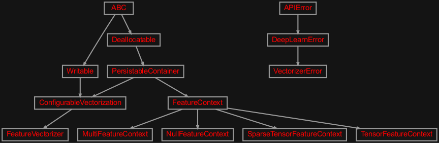
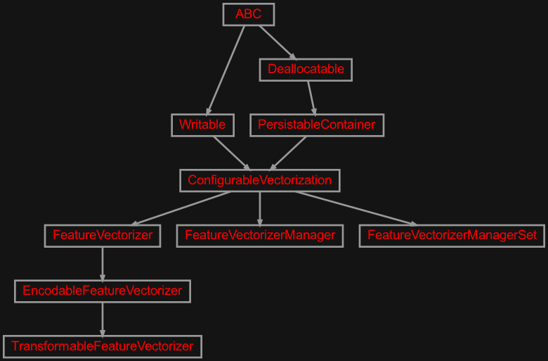
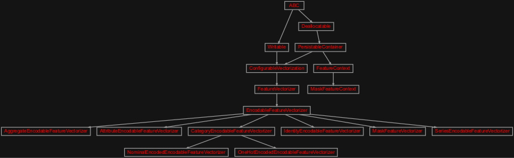

zensols.deeplearn.vectorize package#
Submodules#
zensols.deeplearn.vectorize.domain#

Vectorization base classes and basic functionality.
- class zensols.deeplearn.vectorize.domain.ConfigurableVectorization(name, config_factory)[source]#
Bases:
PersistableContainer,Writable- __init__(name, config_factory)#
-
config_factory:
ConfigFactory# The configuration factory that created this instance and used for serialization functions.
- write(depth=0, writer=<_io.TextIOWrapper name='<stdout>' mode='w' encoding='utf-8'>)[source]#
Write the contents of this instance to
writerusing indentiondepth.- Parameters:
depth (
int) – the starting indentation depthwriter (
TextIOBase) – the writer to dump the content of this writable
- class zensols.deeplearn.vectorize.domain.FeatureContext(feature_id)[source]#
Bases:
PersistableContainerData created by coding and meant to be pickled on the file system.
- See EncodableFeatureVectorizer.encode:
- __init__(feature_id)#
-
feature_id:
str# The feature id of the
FeatureVectorizerthat created this context.
- class zensols.deeplearn.vectorize.domain.FeatureVectorizer(name, config_factory, feature_id)[source]#
Bases:
ConfigurableVectorizationAn asbstrct base class that transforms a Python object in to a PyTorch tensor.
- __init__(name, config_factory, feature_id)#
- write(depth=0, writer=<_io.TextIOWrapper name='<stdout>' mode='w' encoding='utf-8'>)[source]#
Write the contents of this instance to
writerusing indentiondepth.- Parameters:
depth (
int) – the starting indentation depthwriter (
TextIOBase) – the writer to dump the content of this writable
- class zensols.deeplearn.vectorize.domain.MultiFeatureContext(feature_id, contexts)[source]#
Bases:
FeatureContextA composite context that contains a tuple of other contexts.
- __init__(feature_id, contexts)#
-
contexts:
Tuple[FeatureContext]# The subordinate contexts.
- class zensols.deeplearn.vectorize.domain.NullFeatureContext(feature_id)[source]#
Bases:
FeatureContextA no-op feature context used for cases such as prediction batches with data points that have no labels.
- See:
create_prediction()- See:
Batch
- __init__(feature_id)#
- class zensols.deeplearn.vectorize.domain.SparseTensorFeatureContext(feature_id, sparse_data)[source]#
Bases:
FeatureContextContains data that was encded from a dense matrix as a sparse matrix and back. Using torch sparse matrices currently lead to deadlocking in child proceesses, so use scipy :class:
csr_matrixis used instead.-
USE_SPARSE:
ClassVar[bool] = True# Whether or not to enable sparse matrix serialization. Otherwise, torch tensors (no conversion) are used.
- __init__(feature_id, sparse_data)#
-
USE_SPARSE:
- class zensols.deeplearn.vectorize.domain.TensorFeatureContext(feature_id, tensor)[source]#
Bases:
FeatureContextA context that encodes data directly to a tensor. This tensor could be a sparse matrix becomes dense during the decoding process.
- __init__(feature_id, tensor)#
- exception zensols.deeplearn.vectorize.domain.VectorizerError[source]#
Bases:
DeepLearnErrorThrown by instances of
FeatureVectorizerduring encoding or decoding operations.- __annotations__ = {}#
- __module__ = 'zensols.deeplearn.vectorize.domain'#
zensols.deeplearn.vectorize.manager#

Vectorization base classes and basic functionality.
- class zensols.deeplearn.vectorize.manager.EncodableFeatureVectorizer(name, config_factory, feature_id, manager)[source]#
Bases:
FeatureVectorizerThis vectorizer splits transformation up in to encoding and decoding. The encoded state as a
FeatureContext, in cases where encoding is prohibitively expensive, is computed once and pickled to the file system. It is then loaded and finally decoded into a tensor.Examples include computing an encoding as indexes of a word embedding during the encoding phase. Then generating the full embedding layer during decoding. Note that this decoding is done with a
TorchConfigso the output tensor goes directly to the GPU.This abstract base class only needs the
_encodemethod overridden. The_decodemust be overridden if the context is not of typeTensorFeatureContext.- __init__(name, config_factory, feature_id, manager)#
- decode(context)[source]#
Decode a (potentially) unpickled context and return a tensor using the manager’s
torch_config.- Return type:
- manager: FeatureVectorizerManager#
The manager used to create this vectorizer that has resources needed to encode and decode.
- property torch_config: TorchConfig#
The torch configuration used to create encoded/decoded tensors.
- class zensols.deeplearn.vectorize.manager.FeatureVectorizerManager(name, config_factory, torch_config, configured_vectorizers)[source]#
Bases:
ConfigurableVectorizationCreates and manages instances of
EncodableFeatureVectorizerand parses text in to feature based document.This handles encoding data into a context, which is data ready to be pickled on the file system with the idea this intermediate state is expensive to create. At training time, the context is brought back in to memory and efficiently decoded in to a tensor.
This class keeps track of two kinds of vectorizers:
module: registered with
register_vectorizerin Python modules- configured: registered at instance create time in
configured_vectorizers
Instances of this class act like a
dictof all registered vectorizers. This includes both module and configured vectorizers. The keys are the ``feature_id``s and values are the contained vectorizers.- ATTR_EXP_META = ('torch_config', 'configured_vectorizers')#
- MANAGER_SEP = '.'#
- __init__(name, config_factory, torch_config, configured_vectorizers)#
- configured_vectorizers: Set[str]#
Configuration names of vectorizors to use by this manager.
- property feature_ids: Set[str]#
Get the feature ids supported by this manager, which are the keys of the vectorizer.
- torch_config: TorchConfig#
The torch configuration used to encode and decode tensors.
- transform(data)[source]#
Return a tuple of duples with the output tensor of a vectorizer and the vectorizer that created the output. Every vectorizer listed in
feature_idsis used.- Return type:
- write(depth=0, writer=<_io.TextIOWrapper name='<stdout>' mode='w' encoding='utf-8'>)[source]#
Write the contents of this instance to
writerusing indentiondepth.- Parameters:
depth (
int) – the starting indentation depthwriter (
TextIOBase) – the writer to dump the content of this writable
- class zensols.deeplearn.vectorize.manager.FeatureVectorizerManagerSet(name, config_factory, names)[source]#
Bases:
ConfigurableVectorizationA set of managers used collectively to encode and decode a series of features across many different kinds of data (i.e. labels, language features, numeric).
In the same way a
FeatureVectorizerManageracts like adict, this class is adictforFeatureVectorizerManagerinstances.- ATTR_EXP_META = ('_managers',)#
- __init__(name, config_factory, names)#
- property feature_ids: Set[str]#
Return all feature IDs supported across all manager registered with the manager set.
- names: List[str]#
The sections defining
FeatureVectorizerManagerinstances.
- write(depth=0, writer=<_io.TextIOWrapper name='<stdout>' mode='w' encoding='utf-8'>)[source]#
Write the contents of this instance to
writerusing indentiondepth.- Parameters:
depth (
int) – the starting indentation depthwriter (
TextIOBase) – the writer to dump the content of this writable
- class zensols.deeplearn.vectorize.manager.TransformableFeatureVectorizer(name, config_factory, feature_id, manager, encode_transformed)[source]#
Bases:
EncodableFeatureVectorizerInstances of this class use the output of
EncodableFeatureVectorizer.transform()(chain encode and decode) as the output ofEncodableFeatureVectorizer.encode(), then passes through the decode.This is useful if the decoding phase is very expensive and you’d rather take that hit when creating batches written to the file system.
- __init__(name, config_factory, feature_id, manager, encode_transformed)#
- decode(context)[source]#
Decode a (potentially) unpickled context and return a tensor using the manager’s
torch_config.- Return type:
- encode_transformed: bool#
If
True, enable the transformed output of the encoding step as the decode step (see class docs).
zensols.deeplearn.vectorize.util#
Utiliies for encoding and decoding tensors.
- class zensols.deeplearn.vectorize.util.NonUniformDimensionEncoder(torch_config)[source]#
Bases:
objectEncode a sequence of tensors, each of arbitrary dimensionality, as a 1-D array. Then decode the 1-D array back to the original.
- __init__(torch_config)#
- encode(arrs)[source]#
Encode a sequence of tensors, each of arbitrary dimensionality, as a 1-D array.
- Return type:
-
torch_config:
TorchConfig#
zensols.deeplearn.vectorize.vectorizers#

Vectorizer implementations.
- class zensols.deeplearn.vectorize.vectorizers.AggregateEncodableFeatureVectorizer(name, config_factory, feature_id, manager, delegate_feature_id, size=-1, pad_label=-100)[source]#
Bases:
EncodableFeatureVectorizerUse another vectorizer to vectorize each instance in an iterable. Each iterable is then concatenated in to a single tensor on decode.
Important: you must add the delegate vectorizer to the same vectorizer manager set as this instance since it uses the manager to find it.
- Shape:
(-1, delegate.shape[1] * (2 ^ add_mask))
- DEFAULT_PAD_LABEL = -100#
The default value used for
pad_label, which is used since this vectorizer is most often used to encode labels.
- DESCRIPTION = 'aggregate vectorizer'#
- __init__(name, config_factory, feature_id, manager, delegate_feature_id, size=-1, pad_label=-100)#
- create_padded_tensor(size, data_type=None, device=None)[source]#
Create a tensor with all elements set to
pad_label.- Parameters:
size (
Size) – the dimensions of the created tensordata_type (
dtype) – the data type of the new tensor
- property delegate: EncodableFeatureVectorizer#
- class zensols.deeplearn.vectorize.vectorizers.AttributeEncodableFeatureVectorizer(name, config_factory, feature_id, manager)[source]#
Bases:
EncodableFeatureVectorizerVectorize a iterable of floats. This vectorizer has an undefined shape since both the number of columns and rows are not specified at runtime.
- Shape:
(1,)
- DESCRIPTION = 'single attribute'#
- __init__(name, config_factory, feature_id, manager)#
- class zensols.deeplearn.vectorize.vectorizers.CategoryEncodableFeatureVectorizer(name, config_factory, feature_id, manager, categories)[source]#
Bases:
EncodableFeatureVectorizerA base class that vectorizies nominal categories in to integer indexes.
- __init__(name, config_factory, feature_id, manager, categories)#
- write(depth=0, writer=<_io.TextIOWrapper name='<stdout>' mode='w' encoding='utf-8'>)[source]#
Write the contents of this instance to
writerusing indentiondepth.- Parameters:
depth (
int) – the starting indentation depthwriter (
TextIOBase) – the writer to dump the content of this writable
- class zensols.deeplearn.vectorize.vectorizers.IdentityEncodableFeatureVectorizer(name, config_factory, feature_id, manager)[source]#
Bases:
EncodableFeatureVectorizerAn identity vectorizer, which encodes tensors verbatim, or concatenates a list of tensors in to one tensor of the same dimension.
- DESCRIPTION = 'identity function encoder'#
- __init__(name, config_factory, feature_id, manager)#
- class zensols.deeplearn.vectorize.vectorizers.MaskFeatureContext(feature_id, sequence_lengths)[source]#
Bases:
FeatureContextA feature context used for the
MaskFeatureVectorizervectorizer.- __init__(feature_id, sequence_lengths)#
- class zensols.deeplearn.vectorize.vectorizers.MaskFeatureVectorizer(name, config_factory, feature_id, manager, size=-1, data_type='bool')[source]#
Bases:
EncodableFeatureVectorizerCreates masks where the first N elements of a vector are 1’s with the rest 0’s.
- Shape:
(-1, size)
- DESCRIPTION = 'mask'#
- __init__(name, config_factory, feature_id, manager, size=-1, data_type='bool')#
-
data_type:
Union[str,None,dtype] = 'bool'# The mask tensor type. To use the int type that matches the resolution of the manager’s
torch_config, useDEFAULT_INT.
- class zensols.deeplearn.vectorize.vectorizers.NominalEncodedEncodableFeatureVectorizer(name, config_factory, feature_id, manager, categories, data_type=None, decode_one_hot=False)[source]#
Bases:
CategoryEncodableFeatureVectorizerMap each label to a nominal, which is useful for class labels.
- Shape:
(1, 1)
- DESCRIPTION = 'nominal encoder'#
- __init__(name, config_factory, feature_id, manager, categories, data_type=None, decode_one_hot=False)#
- class zensols.deeplearn.vectorize.vectorizers.OneHotEncodedEncodableFeatureVectorizer(name, config_factory, feature_id, manager, categories, optimize_bools)[source]#
Bases:
CategoryEncodableFeatureVectorizerVectorize from a list of nominals. This is useful for encoding labels for the categorization machine learning task.
- Shape:
(1,) when optimizing bools and classes = 2, else (1, |categories|)
- DESCRIPTION = 'category encoder'#
- __init__(name, config_factory, feature_id, manager, categories, optimize_bools)#
- class zensols.deeplearn.vectorize.vectorizers.SeriesEncodableFeatureVectorizer(name, config_factory, feature_id, manager)[source]#
Bases:
EncodableFeatureVectorizerVectorize a Pandas series, such as a list of rows. This vectorizer has an undefined shape since both the number of columns and rows are not specified at runtime.
- Shape:
(-1, 1)
- DESCRIPTION = 'pandas series'#
- __init__(name, config_factory, feature_id, manager)#
Module contents#
Provides classses that vectorize features in to torch tensors instances of
torch.Tensor.